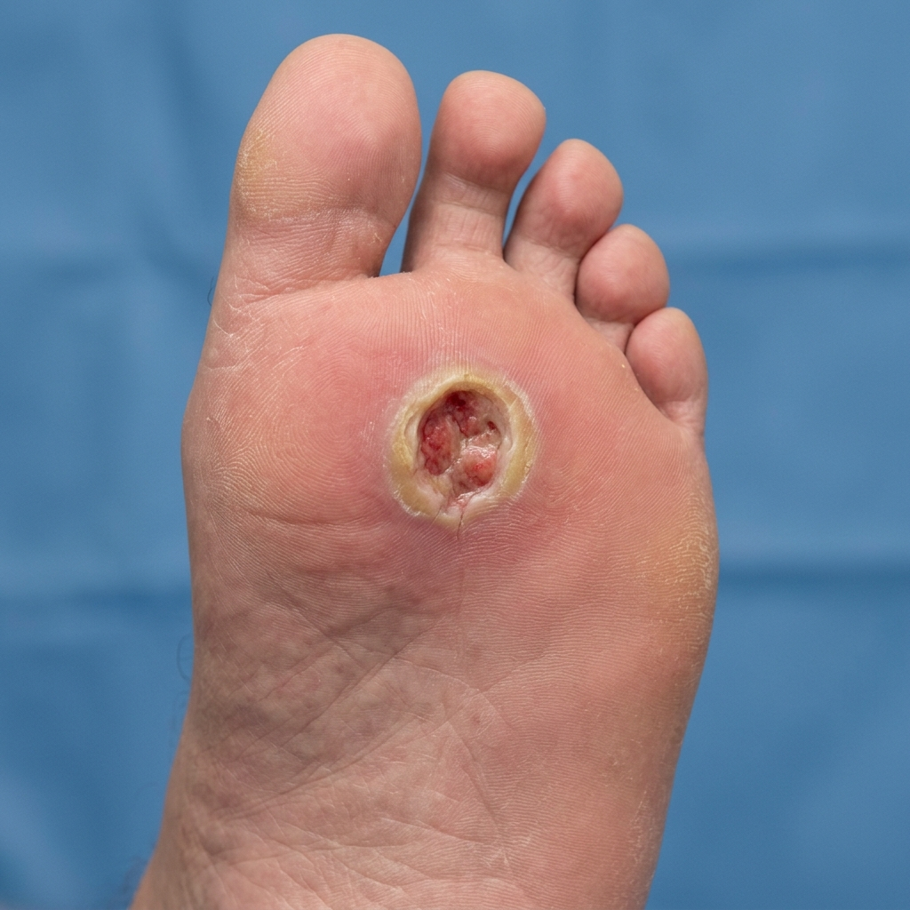

כניסה למערכת
הזן קוד גישה כדי להתחיל באתגר
קוד גישה שגוי. נסה שוב.
HYPERBARIC RESCUE
משימת הצלת כף הרגל הסוכרתית
הצטרפו לצוות הרפואה ההיפרברית הלאומי! המשימה שלכם: לאבחן חולים עם כיבים סוכרתיים קשים, להכין אותם בבטחה, ולנהל את הטיפול בתוך תא הלחץ (HBOT) כדי למנוע קטיעה ולהביא לריפוי פצעים.
האם יש לכם את מה שנדרש כדי להציל את הרגל?
יוסי כהן, בן 62
חולה סוכרת סוג 2 מזה 15 שנה. פיתח כיב עמוק בכף רגל ימין שאינו מראה סימני החלמה מעל 3 חודשים. מופנה להערכת התאמה לתא לחץ.
הערכת פוטנציאל ההחלמה של הפצע
על מנת לקבוע אם המטופל מתאים לטיפול בתא לחץ ולצפות את סיכויי ההחלמה של הכיב, עלינו לבצע בדיקה ייעודית.
איזו בדיקה יכולה לסייע בהערכת פוטנציאל ההחלמה של פצע סוכרתי ובהתאמת טיפול לתא לחץ?

בקרת סוכר לפני צלילה
טיפול בחמצן היפרברי (HBOT) מגביר את צריכת הגלוקוז על ידי התאים ומעלה את הרגישות לאינסולין. בשל כך, המטופל נמצא בסיכון לפתח היפוגליקמיה קשה בתוך התא. תא לחץ סגור ואטום מקשה על טיפול מהיר באירועי היפו, ולכן חובה לוודא רמת סוכר בטוחה לפני הכניסה.
מכשיר גלוקומטר (מד-סוכר)
שלב א': קביעת רמת יעד
מהו טווח הגלוקוז שאליו אנו שואפים לפני כניסת מטופל סוכרתי לתא לחץ?
בצע פעולה לטיפול מונע ביוסי כדי להביא אותו לטווח הבטוח:
שלב ב': זיהוי חולים בסיכון גבוה
מיינו את תיקי המטופלים הבאים המיועדים לטיפול היום בתא הלחץ. אחד מהם בסיכון קיצוני להיפוגליקמיה קשה בתוך התא!
איזה מהמטופלים הבאים נמצא בסיכון הגבוה ביותר לפתח היפוגליקמיה במהלך הטיפול בתא לחץ?
לוח בקרה היפרברי
העלו את לחץ התא באמצעות הסליידר לטווח הטיפול המומלץ: 2.0 - 2.4 ATA. שמרו על יציבות הלחץ!
המטופל מתלונן על כאבי אוזניים עקב עליית לחץ מהירה מדי.
עבודה מדהימה!
סיימת את הטיפול בהצלחה!
האתגר הושלם בהצלחה!
הציגו קוד זה למארגני הכנס כדי להיכנס להגרלה על שוברים כספיים:
שלבי ריפוי הפצע בעקבות הטיפול
חמצן היפרברי בלחץ של 2.0-2.4 ATA ממיס חמצן ישירות בפלזמה, מעודד אנגיוגנזה (צמיחת כלי דם חדשים) וקולגן ומאיץ ריפוי:
איסכמיה מקומית המעכבת ריפוי
יצירת כלי דם ורקמת חיבור חדשה
בניית רקמת עור עליונה וריפוי מלא
סיכום רפואי - מה למדנו?
- בדיקת TcPO2 הכרחית לקביעת רמת אספקת החמצן המקומית לרקמות הפצע, ומנבאת האם המטופל יגיב היטב לטיפול בתא לחץ.
- בקרת סוכר קפדנית לפני כניסה לתא היא קריטית: שואפים לטווח 150-250 mg/dL כדי למנוע היפוגליקמיה תוך-תאית, שכן חמצן היפרברי מוריד את רמת הגלוקוז בדם ומגביר את הרגישות לאינסולין.
- הערכת סיכונים אישית: מטופלים שדילגו על ארוחה או שמינון האינסולין הפעיל שלהם בשיאו הם בסיכון גבוה ביותר להיפוגליקמיה, ויש לתת להם פחמימות מניעתיות מראש.
- עבודה בתא לחץ מחייבת דחיסה הדרגתית (בטווח של 2.0-2.4 ATA), הדרכה להשוואת לחצים באוזניים (Valsalva) ומעקב הדוק אחר בריאות המטופל למניעת אירועי היפו.